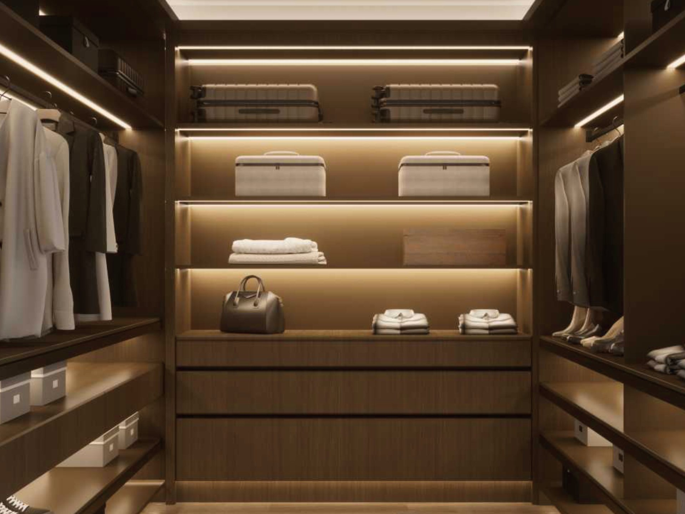
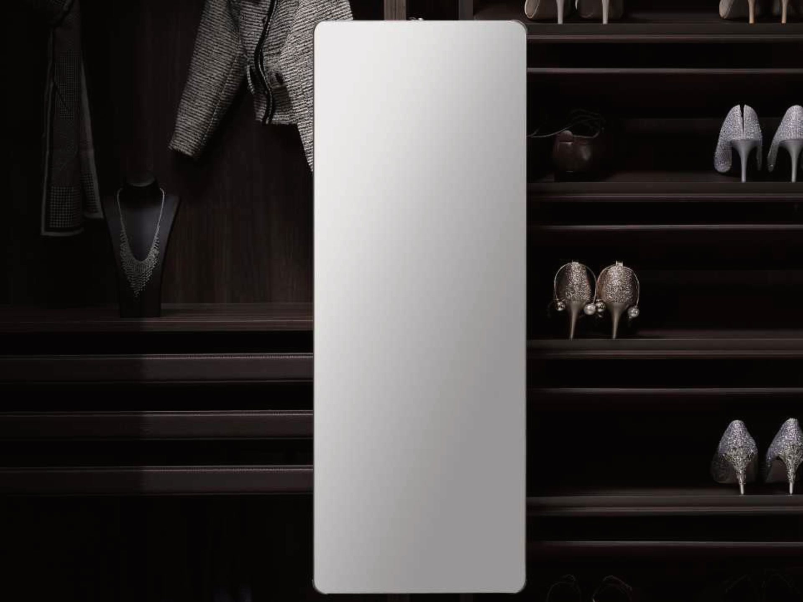
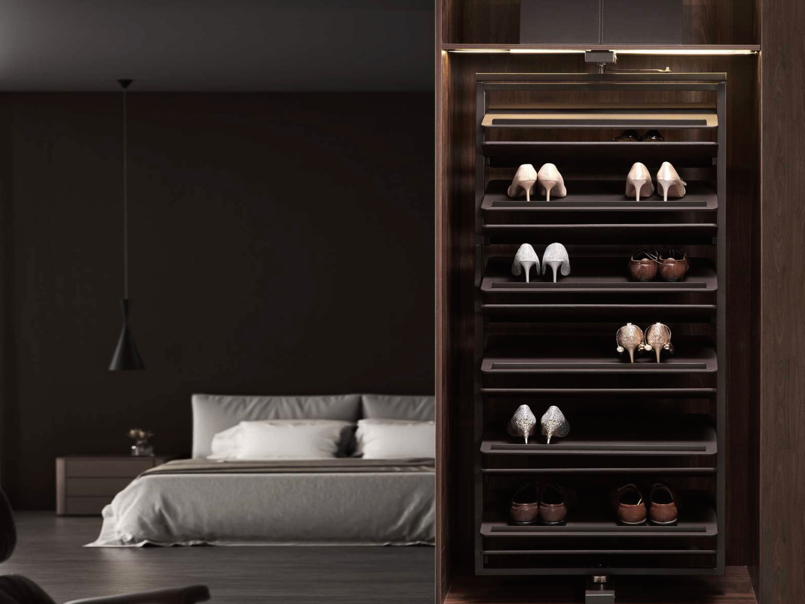
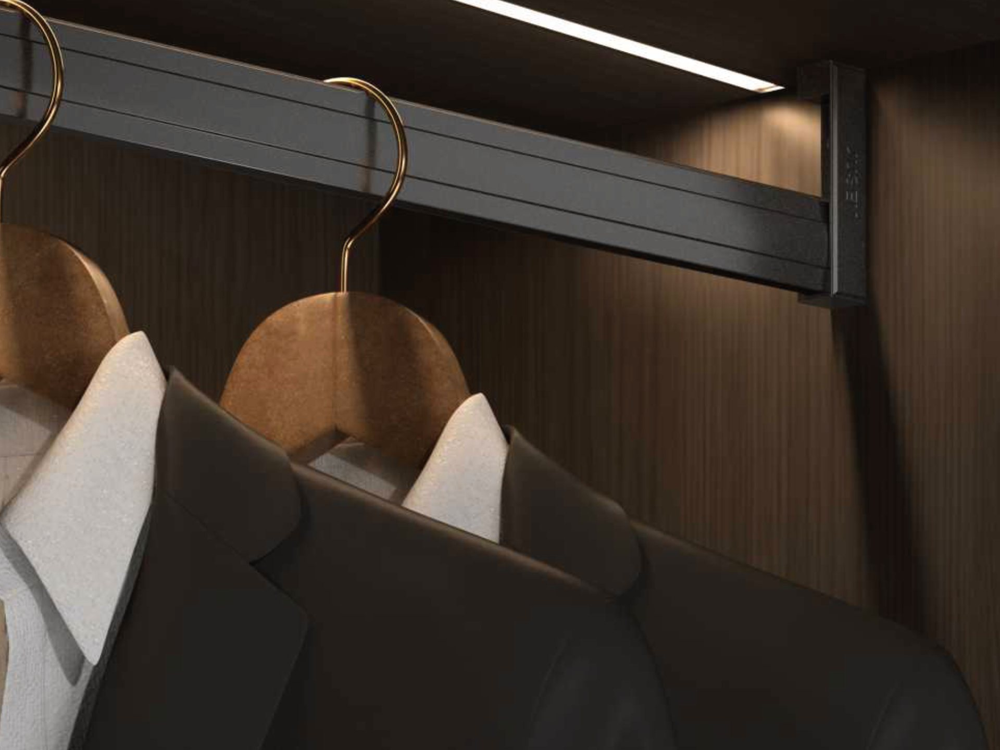
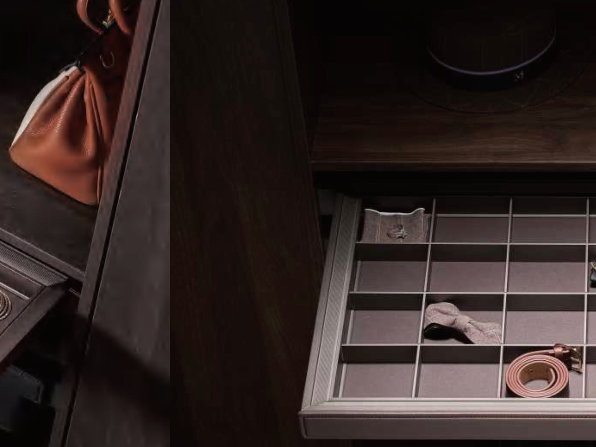
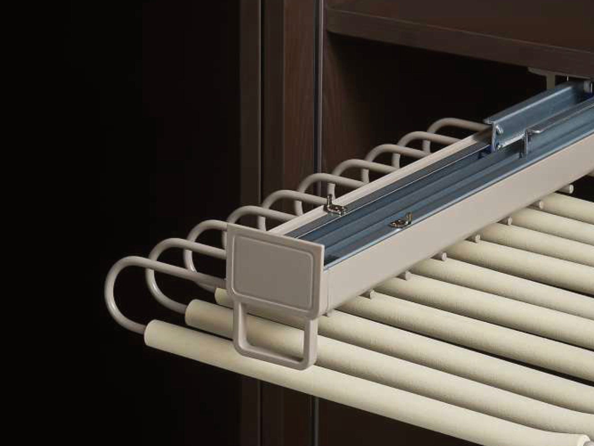
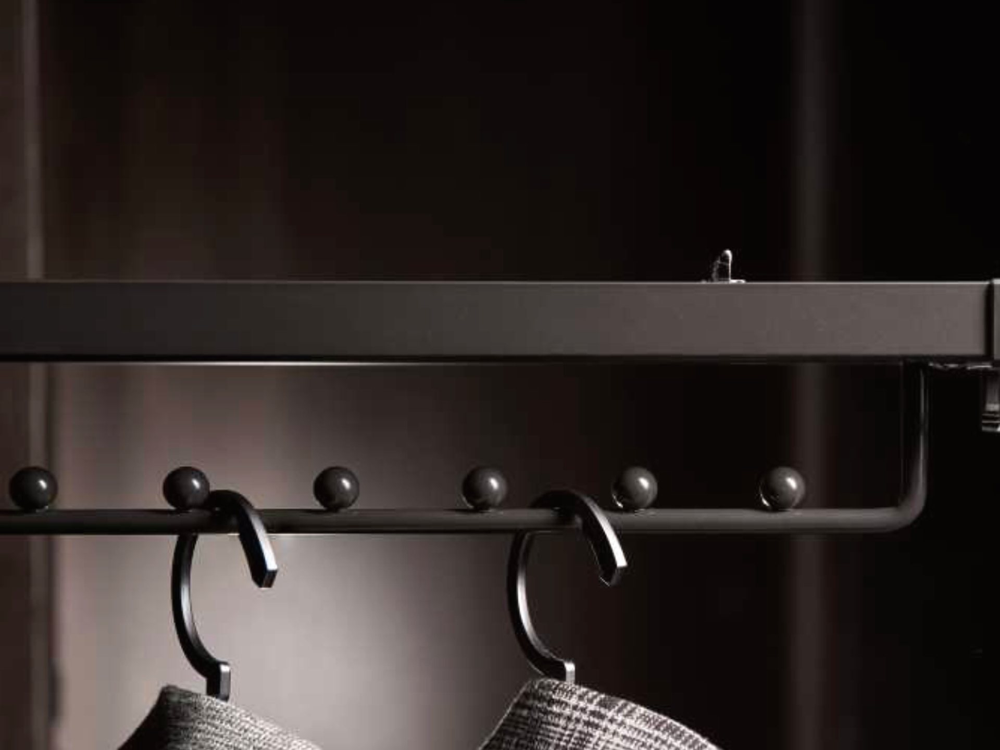

A wardrobe is a box
until you fit it out.
Hanging space and shelves are the easy part, and every quote you get will include them. What decides whether you actually use the robe is the seven things below, and most quotes do not mention any of them.

Things you cannot reach
The parts of a robe
that go unused.
The top metre of a tall wardrobe, the floor, and whatever is behind the first row. All of it is space you have already paid for.

Pull-down hanging rail
The high rail comes down to chest height, manual or motorised. It is what makes the top half of a tall robe storage rather than ceremony.
See how it works →
Pull-out mirror
Full length, inside the robe, out of the way until you want it. No spare wall and no mirrored door needed.
See how it works →
Shoe storage
Angled, flat or rotating. Low, near the door, and sized larger than the number of pairs you own today.
See how it works →Things you cannot see
You own more
than you wear.
Mostly because you cannot see it. Light, visible storage and fittings that hold things in order rather than in a heap are what close that gap.

Wardrobe lighting
Lit rails, shelf strips and glazed display drawers, on sensors. The bedroom light puts your shadow on the clothes; this does not.
See how it works →
Drawer inserts
Fitted trays cut to the drawer, compartments sized by shape, lined where the contents scratch.
See how it works →
Trouser rack
Individual arms on runners so trousers hang full length. No crease at the knee and every pair visible at once.
See how it works →
Valet rod and racks
Somewhere to hang tomorrow, and racks that keep belts and ties straight instead of coiled in a drawer.
See how it works →Why we write this down
Judge us on the detail.
You will get two or three quotes for the same robe and they will all show a number and a render. None of that tells you whether the person drawing it has thought about the drop height on your rail or where the mirror sits when it is open. That is the detail that separates the quotes, which is why it is published rather than saved for the appointment.
The same applies in the kitchen — how we specify kitchen storage covers that side of it.
- Drop heights and clearances on the plan
- Runner ratings specified to the load
- Power drawn in before the carcass is built
- Fittings on the drawing, not added after
- Every line itemised, nothing bundled
Frequently asked
Wardrobe fittings — questions
If your question is not here, call the studio. We would rather talk it through than have you guess.
Ask us directly →What do wardrobe fittings cost?
Each is specified per robe and appears as its own line on the quote rather than bundled into a package. You can take any of them off and see exactly what comes back.
Do I have to decide on fittings when I order?
Nearly all of them need the cabinet drawn around them — the drop height for a lift rail, the depth for a trouser rack, power for lighting. Adding them later is sometimes possible and always more awkward.
Which fittings are actually worth it?
If you do one, make it the valet rod: it costs almost nothing and gets used daily. After that it depends on the robe. A tall one justifies the lift rail, a walk-in justifies the lighting and the rotating shoe rack, and anyone who owns more than a few pairs of trousers notices the trouser rack immediately.
Can fittings go into a wardrobe I already have?
Drawer inserts, usually, because they are cut to the drawer you have. Anything needing clearance, a particular runner or power is far less reliable retrofitted than specified from the start.
Do you supply wardrobes flat packed?
Yes, and delivered assembled. Flat packed, each fitting arrives with the cabinet it belongs to. Assembled, it is fitted and adjusted before the carton is closed. Installation is Central Queensland only; everywhere else your own installer fits it.
Delivered assembled
The assembly is done
before it arrives.
Carcasses built square on a bench, Blum hardware fitted, doors hung and adjusted to even gaps. On site you are fixing finished cabinets to a wall, not building them on the floor. Our own team fits it in Central Queensland; your installer fits it anywhere else in Australia. Prefer to build it yourself? The same kitchen ships flat pack.

Walk-in robe drawers on Blum runners

Laundry, delivered assembled

Gloss doors, adjusted to even gaps before delivery
Your joinery
Send us the dimensions.
We will draw it properly.
A fixed, itemised quote with every fitting on its own line, flat packed or delivered assembled.